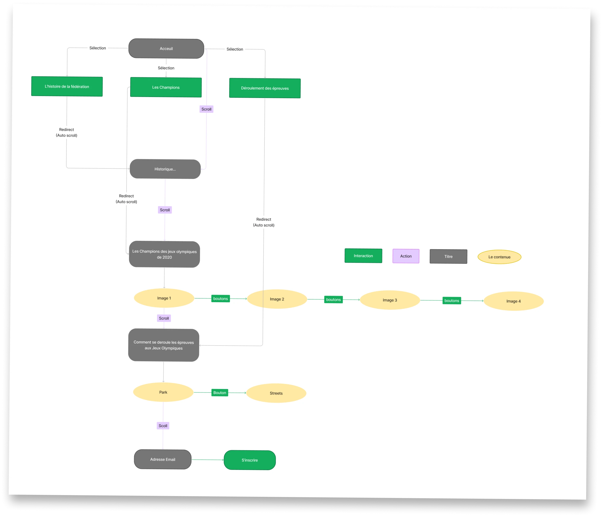
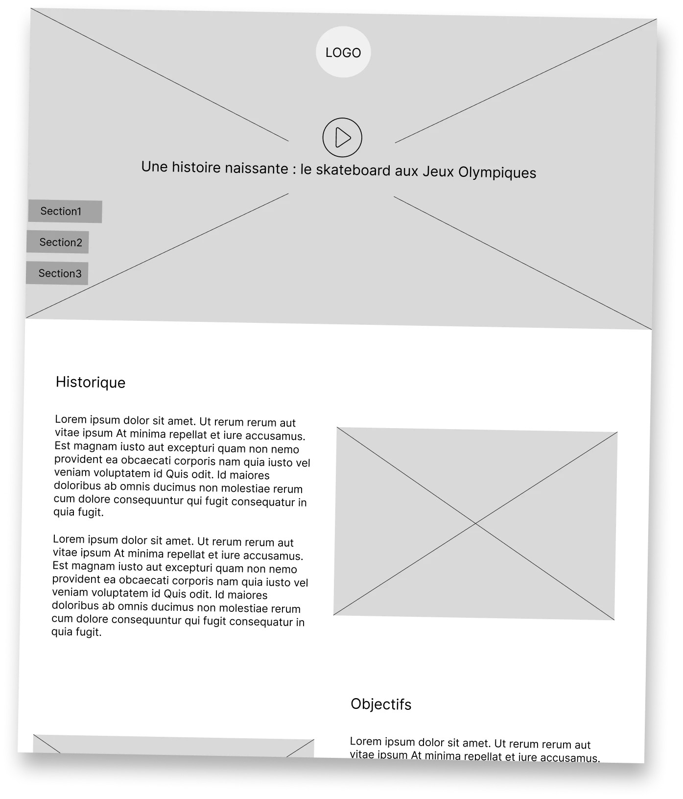
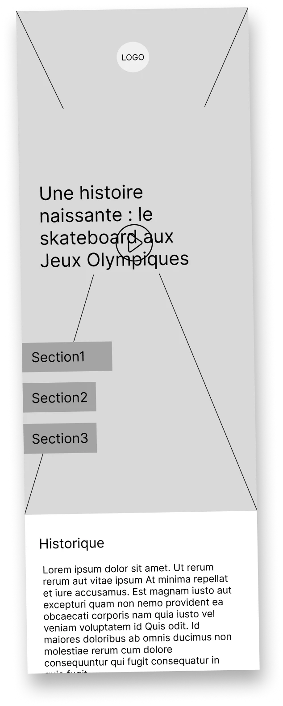

Skate aux JO
C'est quoi ?
Un site vitrine sur le skateboard, son histoire, son arrivée aux JO et la fédération qui le fait vivre.
La demande
Le brief
En 2e année, on devait apprendre Figma et le travail en équipe. Le sujet était de présenter le skateboard et sa fédération.
Mon rôle
Ce que j'ai fait
J'ai été designer UX, mais surtout développeur pendant le hackathon. J'ai transformé nos maquettes en vrai site.
Étape 1
Comprendre
On a étudié l'histoire de la fédération, les champions et les règles des épreuves.
Étape 2
Organiser
On a dessiné le chemin du visiteur, avec trois entrées depuis l'accueil.
Étape 3
Esquisser
On a fait des wireframes en noir et blanc, sur ordinateur et sur mobile.
Étape 4
Designer
On a ajouté les photos, les couleurs et la typographie.
Étape 5
Animer
On a animé un carrousel des champions et des onglets Park et Street.


